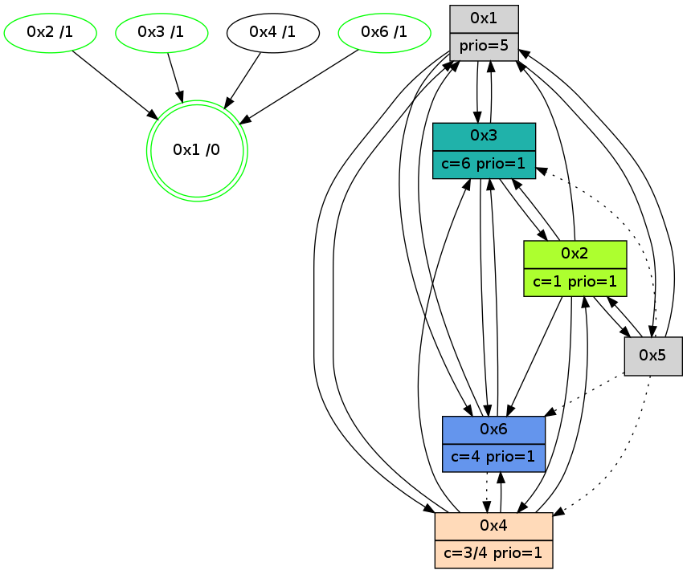

>> << IDX [start] -100 -25 -5 +0 +5 +25 +100 [850.020442963]
 Previous packets
----------------------------------------------------------------------
845.099362 beacon01(adaf) #0 coord=01,02,05,03,04,06 cycle=432.0ms assoc
-- color-indic=1 64 e3 ea
845.109322 beacon02(adaf) #0 coord=01,02,05,03,04,06 cycle=432.0ms assoc 64 b2 15
845.119323 beacon05(adaf) #0 coord=01,02,05,03,04,06 cycle=432.0ms assoc 64 14 3f
845.129323 beacon03(adaf) #0 coord=01,02,05,03,04,06 cycle=432.0ms assoc 64 88 1b
845.139324 beacon04(adaf) #0 coord=01,02,05,03,04,06 cycle=432.0ms assoc 64 2e 31
845.149323 beacon06(adaf) #0 coord=01,02,05,03,04,06 cycle=432.0ms assoc 64 5a 2d
845.161860 [Color(6) seq=75 @0:0 color=4 prio=1 c=0,1,2,5,6;3]
845.165608 [Color(3) seq=45 @0:0 color=6 prio=1 c=1,3,4,5;0,2]
----------------------------------------------------------------------
845.591471 beacon01(adaf) #0 coord=01,02,05,03,04,06 cycle=432.0ms assoc
-- color-indic=1 64 af 5a
845.601432 beacon02(adaf) #0 coord=01,02,05,03,04,06 cycle=432.0ms assoc 64 fe a5
845.611432 beacon05(adaf) #0 coord=01,02,05,03,04,06 cycle=432.0ms assoc 64 58 8f
845.621433 beacon03(adaf) #0 coord=01,02,05,03,04,06 cycle=432.0ms assoc 64 c4 ab
845.631433 beacon04(adaf) #0 coord=01,02,05,03,04,06 cycle=432.0ms assoc 64 62 81
845.641433 beacon06(adaf) #0 coord=01,02,05,03,04,06 cycle=432.0ms assoc 64 16 9d
845.653121 [Hello(4): seq=650 sym=2,1,6,3 sysInfo=hasWarning stat=2:5,14,11,2/1:4,8,3,0/6:2,0,1,0/3:14,0,12,3]
845.655395 [Hello(1): seq=549 sym=2,3,4,6,5 sysInfo=hasWarning,coloring-mode-on,ColoringModeRequestCalled stat=2:15,6,4,2/3:0,1,0,0/4:8,4,13,2/6:10,15,14,2/5:0,0,0,0]
845.658329 [STC(1) #0.84 new-neigh,tree-change,inconsistent-stability,stable,to-color d=0]
845.661111 [Hello(2): seq=1138 sym=6,4,1,3,5 sysInfo=hasWarning,coloring-mode-on,ColoringModeIndicationCalled stat=6:0,9,13,4/4:7,3,9,2/1:6,12,2,1/3:0,9,9,1/5:1,0,0,0]
845.664379 [Color(2) seq=74 @0:0 color=1 prio=1 c=0,2,3,4,5,6]
845.668156 [Hello(3): seq=648 sym=6,1,2 sysInfo=hasWarning stat=6:2,0,1,0/1:15,4,15,1/2:0,1,0,0]
845.673008 [Color(1) seq=76 @0:0 prio=5 c=1,4,6;0,2,3,5]
----------------------------------------------------------------------
846.083579 beacon01(adaf) #0 coord=01,02,05,03,04,06 cycle=432.0ms assoc
-- color-indic=1 64 6b 35
846.093542 beacon02(adaf) #0 coord=01,02,05,03,04,06 cycle=432.0ms assoc 64 3a ca
846.103540 beacon05(adaf) #0 coord=01,02,05,03,04,06 cycle=432.0ms assoc 64 9c e0
846.113540 beacon03(adaf) #0 coord=01,02,05,03,04,06 cycle=432.0ms assoc 64 00 c4
846.123540 beacon04(adaf) #0 coord=01,02,05,03,04,06 cycle=432.0ms assoc 64 a6 ee
846.133541 beacon06(adaf) #0 coord=01,02,05,03,04,06 cycle=432.0ms assoc 64 d2 f2
846.145105 [STC(4)->1 #0.84 new-neigh,tree-change,inconsistent-stability,to-color d=1]
846.147192 [Color(3) seq=46 @0:0 color=6 prio=1 c=1,3,4,5;0,2]
846.149792 [Color(6) seq=76 @0:0 color=4 prio=1 c=0,1,2,5,6;3]
----------------------------------------------------------------------
846.575686 beacon01(adaf) #0 coord=01,02,05,03,04,06 cycle=432.0ms assoc
-- color-indic=1 64 26 32
846.585647 beacon02(adaf) #0 coord=01,02,05,03,04,06 cycle=432.0ms assoc 64 77 cd
846.595647 beacon05(adaf) #0 coord=01,02,05,03,04,06 cycle=432.0ms assoc 64 d1 e7
846.605648 beacon03(adaf) #0 coord=01,02,05,03,04,06 cycle=432.0ms assoc 64 4d c3
846.615649 beacon04(adaf) #0 coord=01,02,05,03,04,06 cycle=432.0ms assoc 64 eb e9
846.625648 beacon06(adaf) #0 coord=01,02,05,03,04,06 cycle=432.0ms assoc 64 9f f5
846.637321 [Hello(4): seq=651 sym=2,1,6,3 sysInfo=hasWarning stat=2:6,15,11,2/1:5,9,4,0/6:2,0,1,0/3:15,0,12,3]
846.639923 [Hello(2): seq=1139 sym=6,4,1,3 sysInfo=hasWarning,coloring-mode-on,ColoringModeIndicationCalled stat=6:1,9,13,4/4:7,3,10,2/1:6,13,2,1/3:1,9,9,1]
846.642781 [Hello(3): seq=649 sym=6,1,2 mpr= sysInfo=hasWarning stat=6:2,0,1,0/1:15,5,15,1/2:0,1,0,0]
846.644796 [Color(2) seq=75 @0:0 color=1 prio=1 c=0,2,3,4,5,6]
846.652479 [Hello(1): seq=550 sym=2,3,4,6 sysInfo=hasWarning,coloring-mode-on,ColoringModeRequestCalled stat=2:15,6,4,2/3:0,1,0,0/4:8,4,14,2/6:11,15,15,2]
846.654664 [Color(1) seq=77 @0:0 prio=5 c=1,4,6;0,2,3,5]
----------------------------------------------------------------------
847.067794 beacon01(adaf) #0 coord=01,02,05,03,04,06 cycle=432.0ms assoc
-- color-indic=1 64 e2 5d
847.077756 beacon02(adaf) #0 coord=01,02,05,03,04,06 cycle=432.0ms assoc 64 b3 a2
847.087754 beacon05(adaf) #0 coord=01,02,05,03,04,06 cycle=432.0ms assoc 64 15 88
847.097755 beacon03(adaf) #0 coord=01,02,05,03,04,06 cycle=432.0ms assoc 64 89 ac
847.107756 beacon04(adaf) #0 coord=01,02,05,03,04,06 cycle=432.0ms assoc 64 2f 86
847.117755 beacon06(adaf) #0 coord=01,02,05,03,04,06 cycle=432.0ms assoc 64 5b 9a
847.130293 [Color(6) seq=77 @0:0 color=4 prio=1 c=0,1,2,5,6;3]
847.134054 [Color(3) seq=47 @0:0 color=6 prio=1 c=1,3,4,5;0,2]
----------------------------------------------------------------------
847.559901 beacon01(adaf) #0 coord=01,02,05,03,04,06 cycle=432.0ms assoc
-- color-indic=1 64 ae ed
847.569862 beacon02(adaf) #0 coord=01,02,05,03,04,06 cycle=432.0ms assoc 64 ff 12
847.579862 beacon05(adaf) #0 coord=01,02,05,03,04,06 cycle=432.0ms assoc 64 59 38
847.589864 beacon03(adaf) #0 coord=01,02,05,03,04,06 cycle=432.0ms assoc 64 c5 1c
847.599863 beacon04(adaf) #0 coord=01,02,05,03,04,06 cycle=432.0ms assoc 64 63 36
847.609863 beacon06(adaf) #0 coord=01,02,05,03,04,06 cycle=432.0ms assoc 64 17 2a
847.621565 [Hello(4): seq=652 sym=2,1,6,3 sysInfo=hasWarning stat=2:7,0,11,2/1:6,10,4,0/6:2,0,1,0/3:0,1,12,3]
847.624780 [Hello(1): seq=551 sym=2,3,4,6 sysInfo=hasWarning,coloring-mode-on,ColoringModeRequestCalled stat=2:15,6,4,2/3:0,2,0,0/4:8,4,14,2/6:12,15,15,2]
847.626799 [Hello(2): seq=1140 sym=6,4,1,3 sysInfo=hasWarning,coloring-mode-on,ColoringModeIndicationCalled stat=6:2,9,13,4/4:7,3,10,2/1:7,14,2,1/3:1,10,9,1]
847.630562 [Color(2) seq=76 @0:0 color=1 prio=1 c=0,2,3,4,5,6]
847.632850 [Color(1) seq=78 @0:0 prio=5 c=1,4,6;0,2,3,5]
----------------------------------------------------------------------
848.052009 beacon01(adaf) #0 coord=01,02,05,03,04,06 cycle=432.0ms assoc
-- color-indic=1 64 6a 82
848.061971 beacon02(adaf) #0 coord=01,02,05,03,04,06 cycle=432.0ms assoc 64 3b 7d
848.071970 beacon05(adaf) #0 coord=01,02,05,03,04,06 cycle=432.0ms assoc 64 9d 57
848.081971 beacon03(adaf) #0 coord=01,02,05,03,04,06 cycle=432.0ms assoc 64 01 73
848.091972 beacon04(adaf) #0 coord=01,02,05,03,04,06 cycle=432.0ms assoc 64 a7 59
848.101971 beacon06(adaf) #0 coord=01,02,05,03,04,06 cycle=432.0ms assoc 64 d3 45
848.112996 [STC(1) #0.85 new-neigh,tree-change,inconsistent-stability,stable,to-color d=0]
848.115096 [Color(3) seq=48 @0:0 color=6 prio=1 c=1,3,4,5;0,2]
848.117370 [Hello(5): seq=609 sym=2,1 asym=6,3,4 sysInfo=hasWarning stat=2:5,12,6,1/1:13,8,6,1/6:13,12,14,2/3:8,2,10,5/4:9,3,10,2]
----------------------------------------------------------------------
848.544116 beacon01(adaf) #0 coord=01,02,05,03,04,06 cycle=432.0ms assoc
-- color-indic=1 64 34 e3
848.554077 beacon02(adaf) #0 coord=01,02,05,03,04,06 cycle=432.0ms assoc 64 65 1c
848.564078 beacon05(adaf) #0 coord=01,02,05,03,04,06 cycle=432.0ms assoc 64 c3 36
848.574077 beacon03(adaf) #0 coord=01,02,05,03,04,06 cycle=432.0ms assoc 64 5f 12
848.584077 beacon04(adaf) #0 coord=01,02,05,03,04,06 cycle=432.0ms assoc 64 f9 38
848.594078 beacon06(adaf) #0 coord=01,02,05,03,04,06 cycle=432.0ms assoc 64 8d 24
848.605978 [Hello(4): seq=653 sym=2,1,6,3 sysInfo=hasWarning stat=2:8,1,11,2/1:7,11,5,0/6:2,0,1,0/3:0,2,12,3]
848.608645 [Hello(2): seq=1141 sym=6,4,1,3,5 sysInfo=hasWarning,coloring-mode-on,ColoringModeIndicationCalled stat=6:2,10,13,4/4:7,3,10,2/1:7,15,3,1/3:1,10,9,1/5:0,0,0,0]
848.610845 [STC(4)->1 #0.85 new-neigh,tree-change,inconsistent-stability,to-color d=1]
848.613670 [STC(2)->1 #0.85 new-neigh,tree-change,inconsistent-stability,stable,to-color d=1]
848.615103 [Hello(3): seq=651 sym=6,1,2 sysInfo=hasWarning stat=6:2,0,1,0/1:1,7,0,1/2:1,3,0,0]
848.617057 [Color(2) seq=77 @0:0 color=1 prio=1 c=0,2,3,4,5,6]
848.620678 [Color(1) seq=79 @0:0 prio=5 c=1,4,6;0,2,3,5]
----------------------------------------------------------------------
849.036224 beacon01(adaf) #0 coord=01,02,05,03,04,06 cycle=432.0ms assoc
-- color-indic=1 64 f0 8c
849.046184 beacon02(adaf) #0 coord=01,02,05,03,04,06 cycle=432.0ms assoc 64 a1 73
849.056185 beacon05(adaf) #0 coord=01,02,05,03,04,06 cycle=432.0ms assoc 64 07 59
849.066184 beacon03(adaf) #0 coord=01,02,05,03,04,06 cycle=432.0ms assoc 64 9b 7d
849.076185 beacon04(adaf) #0 coord=01,02,05,03,04,06 cycle=432.0ms assoc 64 3d 57
849.086187 beacon06(adaf) #0 coord=01,02,05,03,04,06 cycle=432.0ms assoc 64 49 4b
849.098728 [Color(6) seq=79 @0:0 color=4 prio=1 c=0,1,2,5,6;3]
849.102482 [Color(3) seq=49 @0:0 color=6 prio=1 c=1,3,4,5;0,2]
----------------------------------------------------------------------
849.528335 beacon01(adaf) #0 coord=01,02,05,03,04,06 cycle=432.0ms assoc
-- color-indic=1 64 bc 3c
849.538296 beacon02(adaf) #0 coord=01,02,05,03,04,06 cycle=432.0ms assoc 64 ed c3
849.548295 beacon05(adaf) #0 coord=01,02,05,03,04,06 cycle=432.0ms assoc 64 4b e9
849.558296 beacon03(adaf) #0 coord=01,02,05,03,04,06 cycle=432.0ms assoc 64 d7 cd
849.568297 beacon04(adaf) #0 coord=01,02,05,03,04,06 cycle=432.0ms assoc 64 71 e7
849.578297 beacon06(adaf) #0 coord=01,02,05,03,04,06 cycle=432.0ms assoc 64 05 fb
849.589984 [Hello(4): seq=654 sym=2,1,6,3 sysInfo=hasWarning stat=2:8,2,12,2/1:7,12,5,0/6:2,0,1,0/3:1,3,13,3]
849.592536 [Hello(1): seq=553 sym=3,4,6,5 sysInfo=hasWarning,coloring-mode-on,ColoringModeRequestCalled stat=3:0,3,0,0/4:8,4,14,2/6:13,0,0,2/5:0,0,0,0]
849.595253 [Hello(2): seq=1142 sym=6,4,1,3,5 sysInfo=hasWarning,coloring-mode-on,ColoringModeIndicationCalled stat=6:2,10,14,4/4:8,3,10,2/1:7,0,3,1/3:1,11,9,1/5:0,0,0,0]
849.599151 [Color(2) seq=78 @0:0 color=1 prio=1 c=0,2,3,4,5,6]
849.600432 [Color(1) seq=80 @0:0 prio=5 c=1,4,6;0,2,3,5]